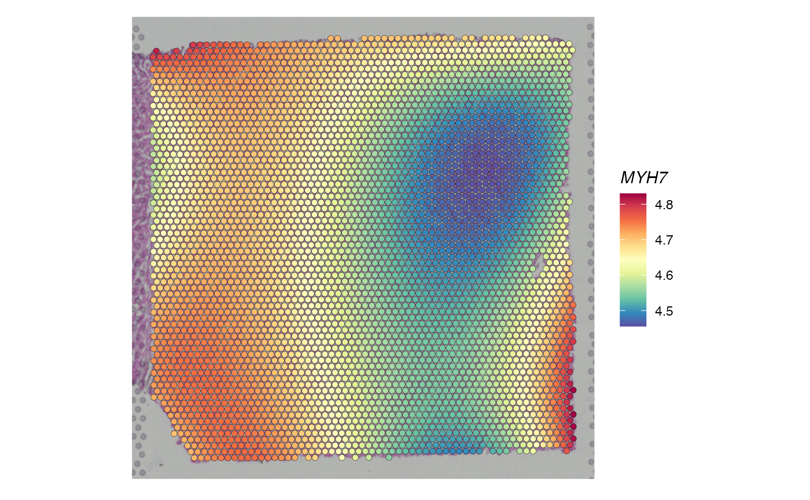

Model spatial gene expression patterns
Haotian Zhuang
February 01, 2024
Source:vignettes/PreTSA_spatial.Rmd
PreTSA_spatial.RmdIntroduction
We will demonstrate how to use PreTSA to fit the gene expression along spatial locations and identify spatially variable genes (SVGs).
The Visium dataset of a human heart tissue was downloaded from the 10x
website. Mitochondrial genes and genes that are expressed in fewer
than 50 spots were filtered out. We analyzed a final set of 11,953 genes
on 4,247 spots. SCTransform with default settings was used
to normalize the raw count data.
Load packages and datasets
library(PreTSA)
load(system.file("extdata", "heart", "heart_cleaned.Rdata", package = "PreTSA"))
str(expr)
#> Loading required package: Matrix
#> Formal class 'dgCMatrix' [package "Matrix"] with 6 slots
#> ..@ i : int [1:8104687] 9 10 16 22 23 45 50 59 61 68 ...
#> ..@ p : int [1:4248] 0 1970 4194 6523 8020 9234 11174 12758 15297 17812 ...
#> ..@ Dim : int [1:2] 11953 4247
#> ..@ Dimnames:List of 2
#> .. ..$ : chr [1:11953] "LINC01409" "LINC01128" "NOC2L" "PERM1" ...
#> .. ..$ : chr [1:4247] "AAACAAGTATCTCCCA-1" "AAACACCAATAACTGC-1" "AAACAGAGCGACTCCT-1" "AAACAGCTTTCAGAAG-1" ...
#> ..@ x : num [1:8104687] 0.693 0.693 0.693 1.792 0.693 ...
#> ..@ factors : list()
str(coord)
#> int [1:4247, 1:2] 50 59 14 43 47 62 61 3 45 54 ...
#> - attr(*, "dimnames")=List of 2
#> ..$ : chr [1:4247] "AAACAAGTATCTCCCA-1" "AAACACCAATAACTGC-1" "AAACAGAGCGACTCCT-1" "AAACAGCTTTCAGAAG-1" ...
#> ..$ : chr [1:2] "row" "col"Fit the gene expression along spatial locations
fitRes <- spatialFit(expr = expr, coord = coord, knot = F)
str(fitRes)
#> num [1:11953, 1:4247] 0.0242 0.1786 0.1103 0.2397 0.2105 ...
#> - attr(*, "dimnames")=List of 2
#> ..$ : chr [1:11953] "LINC01409" "LINC01128" "NOC2L" "PERM1" ...
#> ..$ : chr [1:4247] "AAACAAGTATCTCCCA-1" "AAACACCAATAACTGC-1" "AAACAGAGCGACTCCT-1" "AAACAGCTTTCAGAAG-1" ...The argument “knot” indicates whether to select the optimal number of knots automatically (FALSE by default). The argument “maxknotallowed” is the user-defined maximum number of knots (5 by default).
spatialFit(expr = expr, coord = coord, knot = T, maxknotallowed = 5)Identify spatially variable genes (SVGs)
It returns a data frame with the p-value, FDR, and the number of knots selected for each gene.
testRes <- spatialTest(expr = expr, coord = coord, knot = F)
head(testRes)
#> fdr pval knotnum
#> LINC01409 3.707785e-01 2.210843e-01 0
#> LINC01128 1.314814e-01 4.623516e-02 0
#> NOC2L 4.960952e-01 3.468474e-01 0
#> PERM1 2.940015e-01 1.544033e-01 0
#> HES4 6.518492e-02 1.686202e-02 0
#> ISG15 1.017506e-29 3.405022e-32 0Visualize the fitted expression
The fitted PreTSA expression can be seamlessly incorporated into the
Seurat pipeline.
library(ggplot2)
library(Seurat)
#> Attaching SeuratObject
heart <- Load10X_Spatial(data.dir = system.file("extdata", "heart", package = "PreTSA"), filename = "V1_Human_Heart_filtered_feature_bc_matrix.h5")
DefaultAssay(heart)
#> [1] "Spatial"
heart[["Fitted"]] <- CreateAssayObject(data = fitRes)
DefaultAssay(heart) <- "Fitted"As an example, the fitted PreTSA expression of MYH7 shows that spots in the right side have significantly lower expression levels than those in the left side.
genename <- "MYH7"
SpatialFeaturePlot(heart, features = genename) +
theme(legend.position = "right", legend.title = element_text(face = "italic"))
Session Info
sessionInfo()
#> R version 4.2.1 (2022-06-23)
#> Platform: x86_64-apple-darwin17.0 (64-bit)
#> Running under: macOS Big Sur ... 10.16
#>
#> Matrix products: default
#> BLAS: /Library/Frameworks/R.framework/Versions/4.2/Resources/lib/libRblas.0.dylib
#> LAPACK: /Library/Frameworks/R.framework/Versions/4.2/Resources/lib/libRlapack.dylib
#>
#> locale:
#> [1] en_US.UTF-8/en_US.UTF-8/en_US.UTF-8/C/en_US.UTF-8/en_US.UTF-8
#>
#> attached base packages:
#> [1] stats graphics grDevices utils datasets methods base
#>
#> other attached packages:
#> [1] SeuratObject_4.1.3 Seurat_4.3.0 ggplot2_3.4.2 Matrix_1.5-1
#> [5] PreTSA_1.0
#>
#> loaded via a namespace (and not attached):
#> [1] Rtsne_0.16 colorspace_2.0-3 deldir_1.0-6
#> [4] ellipsis_0.3.2 ggridges_0.5.4 rprojroot_2.0.3
#> [7] fs_1.5.2 spatstat.data_3.0-0 rstudioapi_0.14
#> [10] farver_2.1.1 leiden_0.4.3 listenv_0.9.0
#> [13] bit64_4.0.5 ggrepel_0.9.2 fansi_1.0.3
#> [16] codetools_0.2-18 splines_4.2.1 cachem_1.0.6
#> [19] knitr_1.41 polyclip_1.10-4 jsonlite_1.8.4
#> [22] ica_1.0-3 cluster_2.1.3 png_0.1-8
#> [25] uwot_0.1.14 spatstat.sparse_3.0-0 shiny_1.7.4
#> [28] sctransform_0.3.5 compiler_4.2.1 httr_1.4.5
#> [31] fastmap_1.1.0 lazyeval_0.2.2 cli_3.6.1
#> [34] later_1.3.0 htmltools_0.5.4 tools_4.2.1
#> [37] igraph_1.3.5 gtable_0.3.1 glue_1.6.2
#> [40] RANN_2.6.1 reshape2_1.4.4 dplyr_1.1.1
#> [43] Rcpp_1.0.10 scattermore_0.8 jquerylib_0.1.4
#> [46] pkgdown_2.0.7 vctrs_0.6.1 nlme_3.1-157
#> [49] spatstat.explore_3.0-5 progressr_0.12.0 lmtest_0.9-40
#> [52] spatstat.random_3.0-1 xfun_0.39 stringr_1.5.0
#> [55] globals_0.16.2 mime_0.12 miniUI_0.1.1.1
#> [58] lifecycle_1.0.3 irlba_2.3.5.1 goftest_1.2-3
#> [61] future_1.30.0 MASS_7.3-57 zoo_1.8-11
#> [64] scales_1.2.1 spatstat.utils_3.0-1 ragg_1.2.5
#> [67] promises_1.2.0.1 parallel_4.2.1 RColorBrewer_1.1-3
#> [70] yaml_2.3.6 memoise_2.0.1 reticulate_1.28
#> [73] pbapply_1.6-0 gridExtra_2.3 sass_0.4.4
#> [76] stringi_1.7.8 highr_0.10 desc_1.4.2
#> [79] rlang_1.1.0 pkgconfig_2.0.3 systemfonts_1.0.4
#> [82] matrixStats_0.63.0 evaluate_0.19 lattice_0.20-45
#> [85] tensor_1.5 ROCR_1.0-11 purrr_1.0.1
#> [88] labeling_0.4.2 patchwork_1.1.2 htmlwidgets_1.6.1
#> [91] bit_4.0.5 cowplot_1.1.1 tidyselect_1.2.0
#> [94] parallelly_1.33.0 RcppAnnoy_0.0.20 plyr_1.8.8
#> [97] magrittr_2.0.3 R6_2.5.1 generics_0.1.3
#> [100] DBI_1.1.3 pillar_1.8.1 withr_2.5.0
#> [103] fitdistrplus_1.1-8 abind_1.4-5 survival_3.3-1
#> [106] sp_1.5-1 tibble_3.2.1 future.apply_1.10.0
#> [109] hdf5r_1.3.7 KernSmooth_2.23-20 utf8_1.2.2
#> [112] spatstat.geom_3.0-3 plotly_4.10.1 rmarkdown_2.19
#> [115] grid_4.2.1 data.table_1.14.6 digest_0.6.31
#> [118] xtable_1.8-4 tidyr_1.3.0 httpuv_1.6.7
#> [121] textshaping_0.3.6 munsell_0.5.0 viridisLite_0.4.1
#> [124] bslib_0.4.2